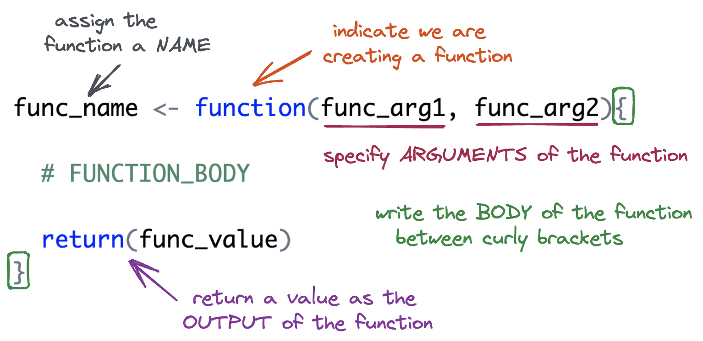

Writing Functions
Tuesday, May 13
Today we will…
- Lecture
- Function Basics
- Variable Scope + Environment
- PA 7: Writing Functions throughout!
Follow along
Remember to download, save, and open up the starter notes for this week!
Why write functions?
Functions allow you to automate common tasks!
- We’ve been using functions since Day 1, but when we write our own, we can customize them!
- Have you found yourself copy-pasting code and only changing small parts?
Writing functions has 3 big advantages over copy-paste:
- Your code is easier to read.
- To change your analysis, simply change one function.
- You avoid mistakes from copy-paste.
Function Basics
Function Syntax
Function Syntax
A (very) Simple Function
Let’s define the function.
- You must run the code to define the function just once.
Naming: add_two <-
The name of the function is chosen by the author.
Arguments
The argument(s) of the function are chosen by the author.
- Arguments are how we pass external values into the function.
- They are temporary variables that only exist inside the function body.
Body: { }
The body of the function is where the action happens.
- The body must be specified within a set of curly brackets.
- The code in the body will be executed (in order) whenever the function is called.
Output: return()
Your function will give back what would normally print out…
Output: return()
If you need to return more than one object from a function, wrap those objects in a list.
PA7 Q1-6
Start Practicing!
Write a function to divide each element in a vector by the smallest element and round the results to the nearest whole number and return the resulting vector.
Write a function that, for each element in a vector, returns TRUE if the number is NOT divisible by 9 or 12, and returns FALSE otherwise
Think through…
- What are arguments?
- What should the function return?
Arguments Cont.
If we supply a default value when defining the function, the argument is optional when calling the function.
- If a value is not supplied,
somethingdefaults to 2.
Input Validation
When a function requires an input of a specific data type, check that the supplied argument is valid.
add_something <- function(x, something){
if(!is.numeric(x)){
stop("Please provide a numeric input for the x argument.")
}
return(x + something)
}
add_something(x = "statistics", something = 5)Error in add_something(x = "statistics", something = 5): Please provide a numeric input for the x argument.add_something <- function(x, something){
if(!is.numeric(x) | !is.numeric(something)){
stop("Please provide numeric inputs for both arguments.")
}
return(x + something)
}
add_something(x = 2, something = "R")Error in add_something(x = 2, something = "R"): Please provide numeric inputs for both arguments.PA7 Q7-8
Practicing with optional v. required arguments
Write a function called every_other(). This function should take in a vector and return every other value in the vector. Include an optional argument called start which lets you choose where to start skipping; that is, if start = 1, the function returns the 1st, 3rd, 5th, etc. values and if start = 2, the function returns the 2nd, 4th, 6th, etc. values.
Add some input validation if you have time!
first argument: vec should be a vector (length more than 1?)
second argument: start only takes values of 1 or 2
Variable Scope + Environment
Variable Scope
The location (environment) in which we can find and access a variable is called its scope.
- We need to think about the scope of variables when we write functions.
- What variables can we access inside a function?
- What variables can we access outside a function?
Global Environment
- The top right pane of Rstudio shows you the global environment.
- This is the current state of all objects you have created.
- These objects can be accessed anywhere.
Function Environment
- The code inside a function executes in the function environment.
- Function arguments and any variables created inside the function only exist inside the function.
- They disappear when the function code is complete.
- What happens in the function environment does not affect things in the global environment.
- Function arguments and any variables created inside the function only exist inside the function.
Function Environment
We cannot access variables created inside a function outside of the function.
Name Masking
Name masking occurs when an object in the function environment has the same name as an object in the global environment.
Dynamic Lookup
Functions look for objects FIRST in the function environment and SECOND in the global environment.
- If the object doesn’t exist in either, the code will give an error.
It is not good practice to rely on global environment objects inside a function!
PA 7 Q9 - 11
Finish PA7
Write a function called shorten(). This function should take in a vector, and only return values from the original vector for which the cumulative sum for that element is greater than a provided number.
Think through for your function:
- What are the arguments and what kinds of values do they take?
- Are any of the arguments optional?
- What should it return?
Debugging

(Allison Horst)
Debugging
You will make mistakes (create bugs) when coding.
- Unfortunately, it becomes more and more complicated to debug your code as your code gets more sophisticated.
- This is especially true with functions!
Debugging Strategies
- Interactive coding
- Highlight lines within your function and run them one-by-one to see what happens.
print()debugging- Add
print()statements throughout your code to make sure the values are what you expect.
- Add
- Rubber Ducking
- Verbally explain your code line by line to a rubber duck (or a human).
Debugging Strategies
When you have a concept that you want to turn into a function…
Write a simple example of the code without the function framework.
Generalize the example by assigning variables.
Write the code into a function.
Call the function on the desired arguments
This structure allows you to address issues as you go.
An Example
Write a function called find_car_make() that takes in the name of a car and returns the “make” of the car (the company that created it).
find_car_make("Toyota Camry")should return “Toyota”.find_car_make("Ford Anglica")should return “Ford”.
An Example
To do…
- PA 7: Writing Functions
- Due Thursday before class
- Final Project Group Contract
- Due Friday, 5/16 at 11:59pm.
- Lab 7: Functions + Fish
- Due Mon 5/19 at 11:59pm.